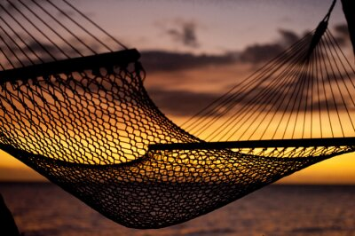

WELCOME TO MY PROFILE!

Hello! My Name is Kosmo Merival. I was born and raised in France. I have lived in this country all my life. Also, as i've constantly visiting many places around the world throughout my vacations, VietNam and Brasil being one of my favourite places, I have become curiousü§† and open-minded. I'm currently living in Paris, were I'm studying a degree in Business Administration at ESSEC Business School
MY ASSOCIATION
I'm currently a member of an associations, a football club. It is called A.S Centre de Paris and it's one of the oldest amator. My role as a player is to represent the club against the other teams in the he championship and to maintain the club in the 4th division.
I'm also a member of a citizen/caricative associsation called Action contre la Faim . Here, I’m in charge of managing the Instagram and Facebook accounts and I create digital content to promote the association. Also, I help to organise events, mainly for charitable purposes and to raise funds and awareness.
TRAVELING
I love travelling, discovering new cultures, meeting new people,etc. In my opinion, seeing the world is more educational than a high school or college clas. When we travel, we have the possibility of learning a new language, a new cuisine, aspects of a different culture, or even acquiring a deeper appreciation of faith or spirituality.
Also, I feel like travelling helps to open your mind. You realize that there’s no one way to live life. Especially, meeting people from other places will show you that your world view isn’t the same as everyone else’s.
I personally prefer to visit places where the weather is warm, such as VietNam, Brasil, Spain, Greece, Turkey... Nonethless, since I love skiing and the snow as well as exploring different environments and places I tend to like all the places I visit. For instance, I went to Switzerland with my best-friends to visit her family a few weeks ago, and I couldn't beleive how beautiful was the landcape that I was 24/7 starring at, whether it was thorugh the windows or while walking around.

RIO DE JANEIRO, BRASIL

HOI AN, VIETNAM
üí™üèºMY SPORTY LIFEüí™üèº
I'm a very active and enthusiastic boy, so sports make part of my dialy life. I have done many sports throughout my whole life apart from tennis. These include horse riding, wakeboard, golf, basketball, football, athletics, skiing, swimming, volleyball, etc. There's not a single sport so far, out of these, that I haven't enjoyed.
I believe sports have contributed a lot to my personal growth and character. They've increased my self-esteem, improved my social skills and leadership abilities, my resilience and developed a positive attitude towards hard moments. Sports have taught me that failing is completely normal when learning something new, to respect the opponents and Fairplay among many other things.
Overall, without sports, I wouldn't have become who I currently am; I feel they're part of my personality.
DRAWING
Drawing is an activity which has helped me express my feelings and let out everything that goes into my mind. I find it so satisfying to just take a brush or a pencil and start playing and experimenting with ideas that come into my mind. Also, I believe drawing has helped me relax and think of other things in times of stress.
I used to draw very often when we had art lessons at school, but once we didn't have any more art lessons, I started doing it less. However, I still draw from time to time as a form of therapy, satisfaction and self-expression.